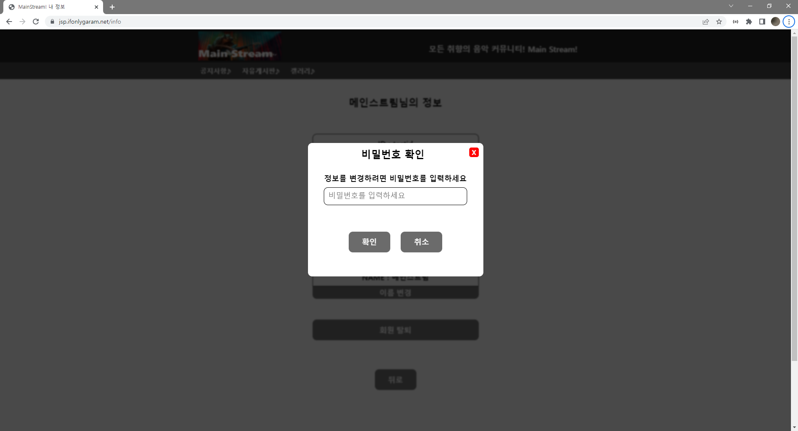
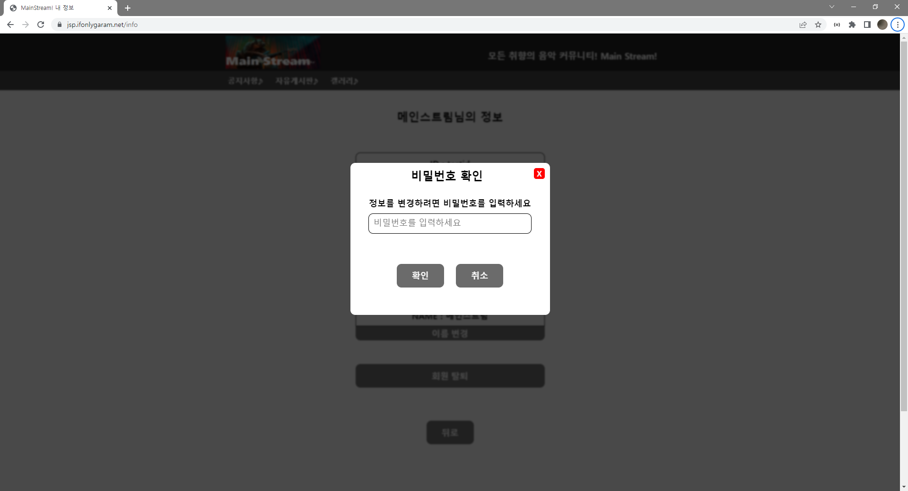
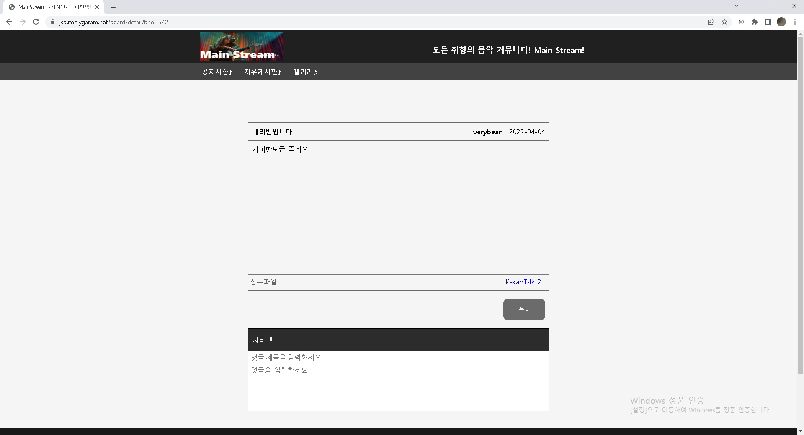
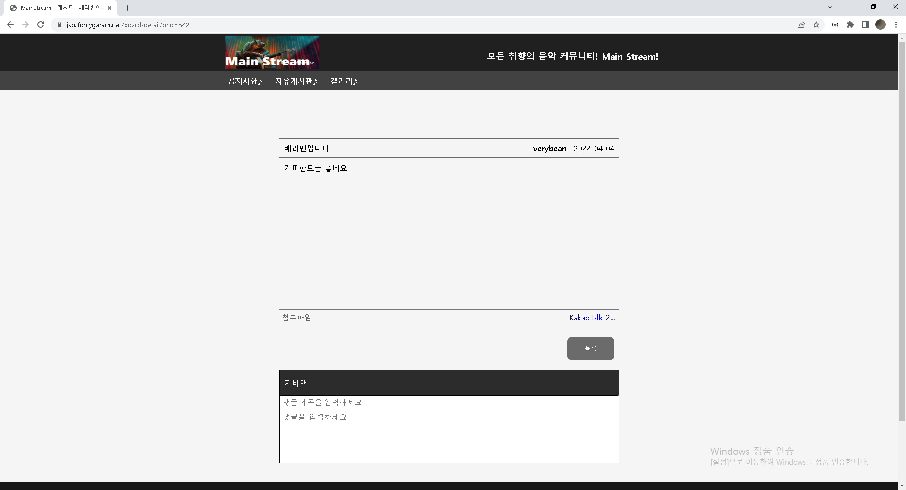

SKILLS
Frontend


Backend


Deployment

Certificate
자바 팀프로젝트

JAVA로 제작한 음악플레이어 입니다.
처음 주제를 정했을때, 멀티쓰레드를 이용해야하는 부담이 있었지만 끝내 잘 마무리 지었습니다.
팀원들과 협업을 통해 소통의 중요성과
팀장으로서 팀원들의 개발능력을 토대로 업무를 분배하고 프로젝트를 이끌어나가는 리더십의 중요성 또한 깨달았습니다.
프로그램은 지정된 폴더에 있는 MP3파일을 재생할수 있고, 간단한 회원가입 기능을 추가해
사용자마다 플레이리스트를 각자 관리할 수 있습니다.
음악을 재생하면서 프로그램 조작이 가능해야 했기에 멀티쓰레드를 활용했습니다.
- 주요기능: 음악재생, 계정생성, 플레이리스트 관리
- 제작기간: 2주
- 제작인원: 4명
자바 팀프로젝트 - 설계구조 및 파트분배


Servlet/JSP 풀 스택


회원제 게시판 형태의 웹 애플리케이션 입니다.
웹 애플리케이션 개발을 위해서
HTTP,
Servlet/JSP,
오라클DBMS,
HTML,
CSS,
JavaScript와
jquery
를 학습했습니다.
이번 프로젝트를 통해서 전무했던 웹 애플리케이션에 대한 이해와 웹 개발방법에 대해 알 수 있었습니다.
회원제기능(가입, 개인정보수정, 탈퇴)과 게시판기능(조회, 작성, 수정, 삭제)구현을 중점으로 개발하였습니다.
- 주요기능: 회원가입, 게시글 작성, 게시글 조회
- 제작기간: 1주
- 제작인원: 1명
- 웹 주소 : https://jsp.ifonlygaram.net
Servlet/JSP 풀 스택 - 회원가입 & 로그인,로그아웃


회원제 기능구현을 위해 Oracle DBMS를 이용하여 회원 테이블을 생성했습니다.
회원가입중 데이터 입력시 각 데이터들에 대한 중복체크, 패턴체크기능을 구현했습니다.
로그인시 쿠키를 이용해 사용자 아이디를 기억하는 기능을 구현했습니다.
로그인 성공시 세션객체에 사용자 정보를 저장하고 로그아웃시 세션객체의 사용자 정보를 제거합니다.
Servlet/JSP 풀 스택 - 회원 정보(비밀번호) 암호화


DB에 저장되는 회원 비밀번호를 Bcrypt 라이브러리를 이용해 암호화 했습니다.
spring security를 접하고난뒤 jsp/servlet에도 보안관련 조치를 할 수 없을까 고민하다 Bcrypt를 알게되어 적용하게 되었습니다.
Bcrypt를 적용하기 전에는 DB상 회원비밀번호가 그대로 노출되었지만,
Bcrypt적용후 Bcrypt.hashpw() 메서드를 통해 암호화된 비밀번호가 DB에 저장됩니다.
로그인 시에는 사용자가 입력하는 비밀번호와 DB의 암호화된 비밀번호를 Bcrypt.checkpw() 메서드를 통해 비교후 로그인 하게 됩니다.
Servlet/JSP 풀 스택 - 회원정보수정 & ID,PWD 찾기
 



회원정보수정
비밀번호 변경, 메일 변경, 이름 변경이 가능하며 정보 변경을 위해서는 한번더 비밀번호 확인이 필요합니다.
정보 변경시에도 사용자가 입력한 데이터의 중복체크, 패턴체크가 적용됩니다.
ID/PWD 찾기
가입시 입력한 이메일을 이용해 각 정보를 찾을수 있습니다.
서버측에서 메일발송을 위해 SMTP를 이용했습니다
메일로 발송되는 인증코드는 uuid.random() 메서드를 통해 얻을수 있는 임의의 난수를 이용했습니다.
회원정보수정과 ID/PWD찾기 기능 모두 Bcrypt를 이용한 비밀번호 암호화를 적용시켰습니다.
Servlet/JSP 풀 스택 - 게시글 조회,작성

 



게시글 기능 구현을 위해 DB에 게시글 테이블을 생성했습니다.
게시글 목록 조회
게시판 페이지를 요청하게 되면 해당 카테고리에 맞는 게시글들을 페이지네이션을 거쳐
사용자의 웹 페이지에 게시글 목록 형태로 출력하게 됩니다.
게시글 상세 조회
게시글 목록중 하나의 게시글을 클릭하여 게시글 세부내용을 요청할시
게시글의 BNO값을 이용해 해당하는 게시글 상세 페이지로 이동합니다.
게시글 작성
게시글을 작성하면 DB테이블에 글 번호, 제목, 내용, 작성날짜, 아이디, 게시판 카테고리 데이터를 저장(INSERT)하게 됩니다.
글 번호(BNO)는 시퀀스를 통해 발급받습니다.
파일첨부 기능을 구현했습니다.
Servlet/JSP 풀 스택 - 게시글 수정,삭제


게시글 수정
현재 조회중인 글의 작성자인 경우에만 수정버튼이 보이게 됩니다.
수정한 글 제목,내용은 DB에서 UPDATE를 통해 처리됩니다.
아쉽지만 첨부파일의 수정처리는 구현하지 못했습니다.
게시글 삭제
현재 조회중인 글의 작성자인 경우에만 삭제버튼이 보이게 됩니다.
사용자가 삭제 요청시 서버는 DB에서 해당글을 DELETE처리 하여 삭제합니다.
관계된 댓글, 첨부파일 또한 모두 삭제 됩니다
Servlet/JSP 풀 스택 - 댓글 조회, 작성


댓글 기능 구현을 위해 DB에 댓글 테이블을 생성하였습니다.
Ajax를 활용한 비동기처리로 댓글 기능을 구현했습니다.
댓글 조회
게시글 상제 조회하면 해당 게시글에 작성된 댓글또한 조회가 가능합니다.
게시글의 BNO값과 같은 BNO값을 가지는 댓글 데이터들을 조회(SELECT)하여 모두 출력합니다.
댓글 작성
게시글에 댓글을 작성할 경우 댓글의 BNO값은 현 게시글의 BNO값을 참조하고,
댓글의 ID값은 사용자의 ID값을 참조하여 댓글 테이블에 저장(INSERT)합니다.
댓글 테이블의 기본 키 인 RNO값은 시퀀스를 통해 발급 받습니다.
Servlet/JSP 풀 스택 - 댓글 수정, 삭제


댓글을 클릭하게되면 모달창을 통해서 수정, 삭제 기능을 수행할 수 있습니다.
댓글 수정
댓글 작성자와 수정 요청자가 일치하는지 비교(ID값을 비교)후 댓글 수정이 가능합니다.
댓글 수정 요청시 RNO값을 이용해 해당하는 댓글 데이터를 수정(UPDATE)합니다.
댓글 삭제
댓글 작성자와 삭제 요청자가 일치하는지 비교(ID값을 비교)후 댓글 삭제가 가능합니다.
댓글 삭제 요청시 RNO값을 이용해 해당하는 댓글 데이터를 삭제(DELETE)합니다.
Servlet/JSP 풀 스택 - 첨부파일 업로드


파일첨부 기능 구현을 위해 DB에 파일첨부 테이블을 생성했습니다.
cos라이브러리를 이용해 서버측 기능을 구현했습니다.
첨부파일 업로드시 서버에서는 HttpServletRequest가 아닌 MultipartRequest로 데이터를 받아 처리합니다.
MultipartRequest를 이용해 첨부파일들을 서버PC에 업로드 하고, 업로드 파일에 대한
필수 데이터들은 attach객체로 만들어 DB서버에 Insert합니다.
파일확장자를 구분하여 이미지 파일인 경우 썸네일파일을 생성하여 업로드 경로에 저장합니다.
Servlet/JSP 풀 스택 - 첨부파일 다운로드


사용자가 게시글의 첨부파일을 클릭하여 다운로드 요청을 하게 되면, 서버에서는 다운로드 요청을 처리하기 위해 응답헤더를 설정하게 됩니다.
응답헤더의 MimType과 Content-DisPosition을 설정후
출력스트림을 통해 파일 다운로드 요청에 대한 응답을 하게 됩니다.
Servlet/JSP 프로젝트를 -> Spring Framework로 전환

전환 작업을 통해서 Spring Framework의 특징을 알 수 있었습니다.
경량 컨테이너로서 자바 객체를 직접 관리,
Plain Old Java Object 방식의 프레임워크,
제어 반전(IoC : Inversion of Control) 지원,
의존성 주입(DI : Dependency Injection) 지원,
관점 지향 프로그래밍(AOP : Aspect-Oriented Programming) 지원,
영속성과 관련된 다양한 서비스 지원,
높은 확장성 등의 특징이 있다는 것을 알 수 있었습니다.
- 전환기간: 1주
- 제작인원: 1명
- 웹 주소 : https://jsp-to-spring.ifonlygaram.net
Spring Framework IoC 컨테이너와 의존성 주입


Servlet/JSP에서는 객체의 생성은 new() 연산자를 통해 생성하고, 객체간의 연결은 개발자가 직접 맺어주었습니다.
하지만, Spring Framework에서는 IoC컨테이너가 객체의 생성과 연결을 책임지게 됩니다.
IoC컨테이너가 관리하는 객체(Bean)로 등록하기 위해서 @Controller, @service, @Repository 등의 어노테이션을 목적에 맞게 자바 클래스에 추가하고, 의존성 주입(Dependency Injection)이 필요한 객체는 Setter 주입, 생성자 주입, 필드주입 등의 방식을 사용했습니다 .
컨테이너가 Bean객체를 탐색하기 위해 xml파일(root-context, servlet-context)에 component-scan 태그를 추가했습니다.
Spring Framework MVC Controller


Servlet/JSP에서는 특별한 방법을 사용하지 않는 한, URL 하나 당 하나의 Controller 오브젝트로 요청/응답 처리를 하였지만, Spring Framework에서는 소수의 Controller 오브젝트에서 @RequestMapping을 이용해 다수의 URL을 메서드 단위로 처리(생산성 향상)
HttpServletRequest, HttpServletResponse를 거의 사용할 필요 없이 필요한 기능 구현
다양한 타입의 파라미터 처리, 다양한 타입의 리턴 타입 사용 가능
GET 방식, POST 방식 등 전송 방식에 대한 처리를 어노테이션으로 처리 가능
상속/인터페이스 방식 대신에 어노테이션만으로도 필요한 설정 가능
Spring Framework Maven Dependency


Servlet/JSP 프로젝트에선 라이브러리 관리를 직접 했습니다.
그러나 프로젝트의 규모가 커지면 라이브러리의 관리가 어려워지므로 스프링 프로젝트에선 메이븐을 활용해보았습니다.
Spring Framework DB 커넥션 풀 사용


Servlet/JSP 프로젝트에선 DB와 통신시 DB와 매번 연결하는 방식이었습니다.
Spring Framework 프로젝트에선 HikariCP라이브러리를 사용했습니다.
미리 커넥션 객체를 생성하여 커넥션 풀에 저장하고, 연결요청시 커넥션 풀에 있는 커넥션 객체를 사용, 연결 종료후 커넥션 풀에 반환하는 구조를 이용해 성능향샹을 기대할 수 있게됐습니다.